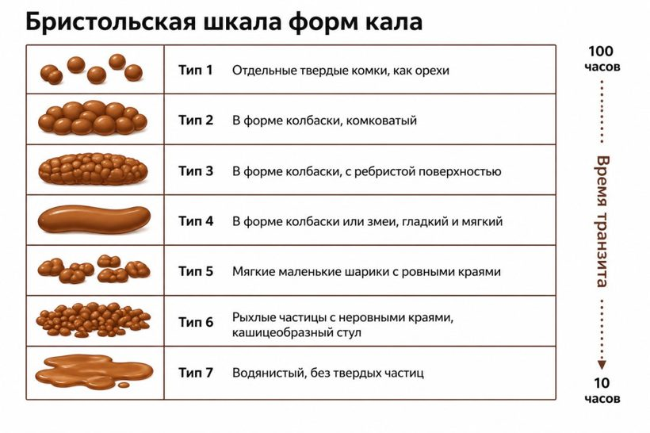

Замкнутый круг удерживания
Один раз было больно, и ребёнок начинает терпеть. Стул задерживается, твердеет, и в следующий раз опять больно. Страх растёт, ребёнок терпит ещё сильнее. Со стороны это выглядит как «психологический запор», но физическая часть тут тоже есть, поэтому начинать нужно с врача.
Как оценить стул: Бристольская шкала
Для оценки формы стула врачи используют Бристольскую шкалу. Типы 3–4 считаются нормой, типы 1–2 говорят о запоре, типы 6–7 о жидком стуле. Если вы видите у ребёнка типы 1–2 или 6–7, это повод показать ребёнка врачу и сначала разобраться с причиной, а уже потом заниматься поведением.

Когда срочно к врачу
- боль или плач при дефекации;
- кровь в стуле;
- выраженное натуживание;
- стул не бывает несколько дней подряд и ребёнку плохо;
- вздутый живот, рвота, повышенная температура.
Лечение подбирает врач. В рекомендациях детских гастроэнтерологов лечение запора включает не только медицинскую часть, но и работу с поведением и режимом, то есть эти направления идут вместе.
Что делать вам, пока вы работаете с врачом
- Не стыдить и не торопить. Любое давление усиливает удержание.
- Сделать туалетную зону спокойной. Удобная поза, подставка под ноги, тёплая обстановка, без зрителей.
- Не держать на горшке и не требовать результата.
- Хвалить за процесс. Подошёл, посидел, попробовал.
- Помнить: чем мягче стул, тем меньше страха. Когда стул становится мягким и регулярным, приучение идёт заметно легче и без откатов.
Если ребёнок уже боится самого процесса, поведенческая работа начинается только после того, как врач исключил медицинские причины и стул нормализовался.
Подробный пошаговый план с разбором кейсов собран в видеокурсе «Дефекация сидя», а для работы с конкретной ситуацией есть индивидуальное сопровождение.
Источники
- Lewis S. J., Heaton K. W. Stool form scale as a useful guide to intestinal transit time. Scandinavian Journal of Gastroenterology, 1997.
- Tabbers M. M. et al. Evaluation and treatment of functional constipation in infants and children: evidence-based recommendations from ESPGHAN and NASPGHAN. Journal of Pediatric Gastroenterology and Nutrition, 2014.
- Hyams J. S. et al. Functional disorders: children and adolescents (Rome IV). Gastroenterology, 2016.
Вопросы и ответы
Сколько дней без стула считается опасным?
Единого числа нет: важно общее состояние. Если ребёнок не ходит несколько дней, ему больно или плохо, обратитесь к врачу.
Можно ли решать запор только психологией?
Нет. Сначала врач исключает медицинские причины и назначает лечение. Поведенческая работа дополняет его.
Страх повторится?
Если стул стал мягким, а родители реагируют спокойно и последовательно, вероятность откатов заметно ниже.
Статья носит общий информационный характер, не заменяет консультацию специалиста и не ставит диагноз: диагноз ставит врач. Если вы тревожитесь за ребёнка, обратитесь к педиатру, неврологу или другому врачу.
Если нужен понятный план именно для вашего ребёнка, напишите мне: подберём формат работы.
Туалетный навык